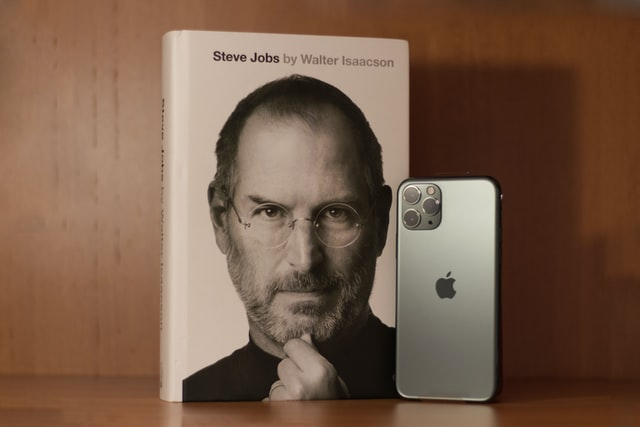
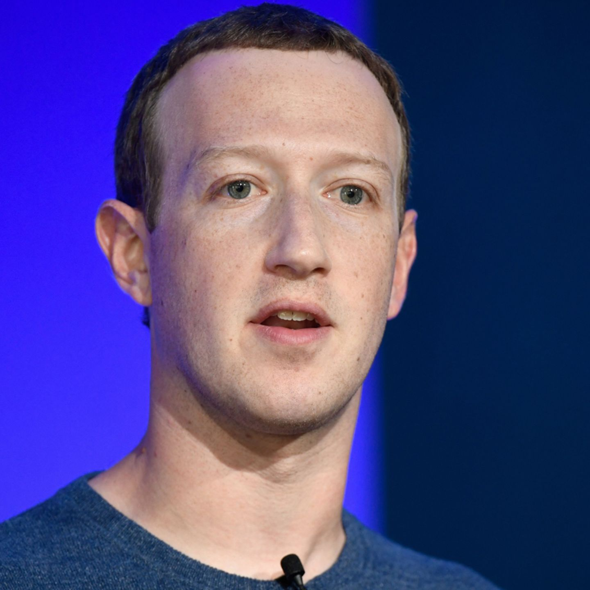

Steve Jobs wurde als Sohn des syrischen Politikstudenten Abdulfattah Jandali und der Amerikanerin deutscher und Schweizer Abstammung Joanne Carole Schieble in San Francisco geboren.[6][7] Da weder die Eltern seiner leiblichen Mutter noch die Eltern des Vaters einer Ehe zugestimmt hätten und seine 23-jährigen Eltern nicht für den Unterhalt des Kindes sorgen konnten, gab Schieble ihren Sohn als Sozialwaise zur Adoption frei.[8] Schieble machte ihre Zustimmung zur Adoption davon abhängig, dass ihr Sohn bei Akademikern aufwachsen sollte. Zunächst lehnte ein Anwalt die Adoption kurz nach Jobs’ Geburt ab, weil er und seine Frau sich eine Tochter wünschten[8] und Steve Jobs wurde schließlich kurz nach seiner Geburt von Paul Reinhold Jobs (1922–1993) und dessen armenischstämmiger Frau Clara Jobs (geborene Hagopian, 1924–1986),[9] aus Mountain View, Kalifornien, adoptiert und erhielt von diesen schließlich den Namen Steven Paul Jobs. Dem Ehepaar Jobs, beide keine Akademiker, rang Schieble das Versprechen ab, Jobs den Zugang zum College zu ermöglichen.[10] Dies erfuhr er erst rund 20 Jahre später von seinen biologischen Eltern wie auch von seiner leiblichen Schwester, der Autorin Mona Simpson.
Im September 2010 wurde bekannt, dass Zuckerberg 100 Millionen US-Dollar für die Schulen der Stadt Newark, New Jersey, spendet und den Aufbau einer Bildungsstiftung anstrebt.[9] Im Dezember 2010 sagte Zuckerberg seine Beteiligung bei The Giving Pledge zu und gab somit das Versprechen, einen Großteil seines Reichtums für wohltätige Zwecke zu spenden.[10] Im Dezember 2012 spendete Mark Zuckerberg 18 Millionen Facebook-Aktien im Wert von rund 500 Millionen US-Dollar an die Silicon Valley Community Foundation. Das Geld soll neue Projekte in den Bereichen Bildung und Gesundheit unterstützen.[11] Am 2. Dezember 2015 wurde mit der Geburt seiner Tochter bekanntgegeben, dass Zuckerberg 99 Prozent seines Facebook-Aktienvermögens, das zu diesem Zeitpunkt einen Wert von 45 Milliarden US-Dollar hatte, in eine Organisation namens Chan Zuckerberg Initiative mit der Rechtsform einer Limited Liability Company einbringen will.[12][13] Im April 2016 kündigte Facebook ein neues Börsenarrangement an.[14] Am 22. September 2016 kündigten Zuckerberg und Chan an, innerhalb der kommenden zehn Jahre drei Milliarden Dollar für den Kampf gegen Krankheiten zu spenden. Mit dem Geld soll ein Projekt der Neurowissenschaftlerin und Genetikexpertin Cornelia Bargmann finanziert und aktiv unterstützt werden.[15]